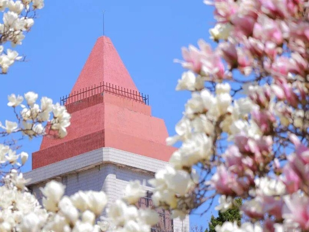
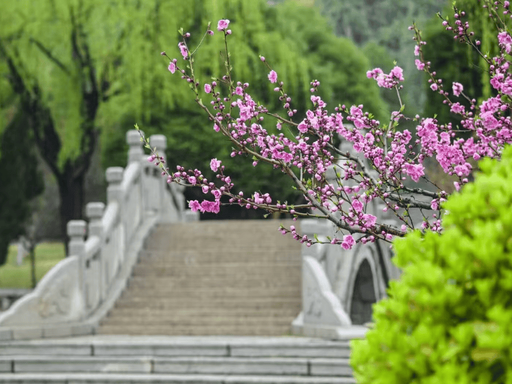
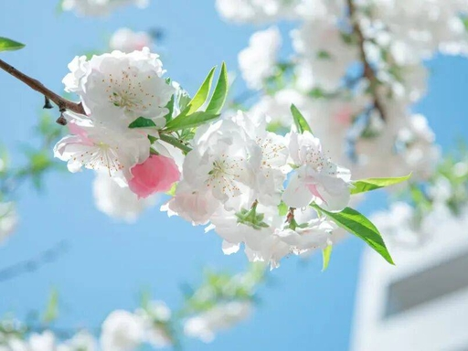

春华
三月的鲁东大学，是被玉兰唤醒的。红顶楼的尖顶还沾着晨雾，图书馆前的玉兰花已悄然绽放，一树树洁白如雪，又似凝脂，花瓣层层舒展，带着温润的光泽，在蓝天的映衬下，清雅得不染尘埃。风掠过枝头，细碎的花瓣轻轻飘落，铺成一地素白，香气幽幽漫开，不浓烈，却清冽绵长，漫过教学楼的回廊，绕过长廊下读书人的发梢。乳子湖畔的垂柳抽出嫩黄的新芽，水波粼粼，倒映着花枝与蓝天，偶有燕子掠过水面，剪碎一池光影。老教学楼旁的松柏愈发苍翠，与洁白的玉兰相映，更显春日的生机与沉静。走在校园里，步步皆景，风是柔的，花是静的，连阳光都变得温柔，透过枝叶的缝隙洒下斑驳光影，落在肩头，也落在心底，让人不觉放慢脚步，沉醉在这独属于鲁大的、清隽雅致的春日序章里。
仲春时节，鲁东大学便成了樱花的海洋。从修读广场到师专路，绵延的樱花树次第盛开，粉白、淡粉的花簇缀满枝头，如云似霞，层层叠叠，将整条道路裹成温柔的花廊。微风轻拂，花瓣簌簌飘落，如一场温柔的花雨，漫天飞舞，落在行人的发间、肩头，落在青石板路上，铺成浪漫的花径。阳光穿过花枝，在地上投下细碎的光影，蜜蜂在花间忙碌，蝴蝶翩跹起舞，鸟鸣清脆，与书页翻动的声音交织成春日最动听的乐章。镜心湖畔，樱花与垂柳相依，湖面如镜，倒映着繁花与蓝天，水波微动，花影摇曳，宛如一幅灵动的水墨画。学子们或在花下漫步闲谈，或驻足拍照留念，或捧着书本在花荫里默读，青春的笑颜与烂漫的樱花相映，满是朝气与美好。这满城飞花的鲁大春日，热烈而温柔，绚烂而诗意，藏着最动人的青春模样，也定格着最难忘的校园时光。
暮春的鲁东大学，因牡丹园而愈发雍容华贵。四月风暖，牡丹园内的牡丹竞相绽放，硕大的花朵层层叠叠，红的似火，粉的如霞，白的像雪，金黄的花蕊点缀其间，国色天香，雍容大气。微风拂过，花枝轻颤，浓郁的花香弥漫开来，甜而不腻，引得蜂蝶环绕，也吸引着学子们驻足观赏。有人携画笔而来，在花架下写生，将这满园春色凝于纸上；有人三两结伴，在花间漫步，轻声赞叹，快门声不断，定格下繁花与笑颜。牡丹园旁的草地绿意盎然，不知名的小蓝花星星点点点缀其间，与华贵的牡丹相映，更显春日的缤纷与灵动。远处的钟楼静静伫立，钟声悠扬，与这满园繁花、欢声笑语相融，勾勒出鲁大春日最丰盈饱满的画卷。这里的春，既有玉兰的清雅、樱花的烂漫，更有牡丹的端庄，繁花似锦，生机盎然，每一寸时光都浸着芬芳，每一处风景都藏着诗意，让人深深眷恋。
鲁大的春日，最美的从来不止繁花，更是花与书香的交融。清晨的乳子湖畔，薄雾未散，垂柳依依，桃花、海棠开得正盛，粉白的花瓣沾着露珠，晶莹剔透。微风拂过，花香与草木的清香交织，沁人心脾，湖畔的石凳上、回廊下，早已坐满了学子。他们或低声诵读，或伏案默读，书页轻翻，书声琅琅，与鸟鸣、流水声交织，成了春日里最动人的旋律。阳光渐渐穿透薄雾，洒在波光粼粼的湖面上，洒在学子们专注的脸庞上，也洒在枝头的繁花间，光影流转，温暖而明媚。老教学楼的红墙在春色中更显古朴，窗前的绿植生机勃勃，与窗外的繁花相映。在这里，春是自然的馈赠，更是成长的底色，繁花装点着校园，书香浸润着时光，鲁大的春日，既有草木葳蕤的生机，更有笃学不倦的朝气，每一朵花开都孕育希望，每一声书声都承载梦想，在春华里绽放，在时光中成长。


